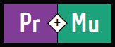

Hello, Welcome to Week 1
This is my Personal Reflection and Goal for the Course

Product and Multimedia Design are the cross concentrations that I chose for
the next 3 years in my bachelors. For this course (Mu Workshop 201),
my goals are to be flexible, open minded and to be able to absorb as many skills as I can without questioning my ability to learn them.
I have always been excited to learn new technologies. One that I have been keen on learning is Augmented Reality, which I have seen the previous batch work on. I think it is a really expressive medium which combines our real world with a virtual one and it would really interesting to learn how it works behind the scenes.
One of my biggest fears for this course is to not be able grasp coding languages as fast as some other people because it takes me some time to understand how the code works and how the mathematical equations affect the outcome, but I am not afraid of working through it because I think that if I put my mind to it I will figure it out.
About technology, I think I have always been excited to try new tech. I am always looking out for the newest developments and try to analyze their use i.e. how it could affect our daily life; how it can be implemented in different systems or can it be used to collect/visualize data.
One of my most inspirational artists whose work I have discovered only recently is, Sagi Abitbul. He is an Israeli DJ who creates Electronic/Trance music which I have been obsessed with for the past 2 - 3 months. His music is often very fast paced which gets faster as you get deeper into the song and it really ignites a powerful feeling inside me, it really pushes me to be productive and get my stuff done and it also it helps me stay motivated on any project that I am working on.
Ever since I started listening to his music I have wanted to create animated visuals that react to the music but not as a regular visualizer… So, I spent a couple of weeks learning animation and ended up creating a visual that I really love, and I am working on more, but the video down below is my first attempt at it.
Thank you
Leave